- Present
- Dec '24
- Nov '24
- Sept '24
- Jun '24
- Jun '24
- Apr '24
- Mar '24
- Jan '24
- Dec '23
- Nov '23
- Oct '23
- Jun '23
- Mar '23
- Mar '22
- Dec '21
- Jun '21
- Jun '14
- Jul '07
-
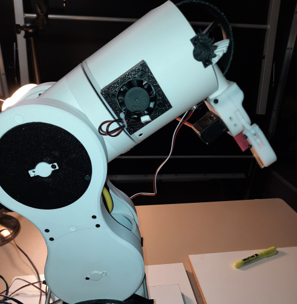
Now
Currently working on a 6 Degrees of Freedom Thor robot arm that uses image segmentation, depth estimation, 3D reconstruction, and reinforcement learning to perform tasks such as picking up objects.
-
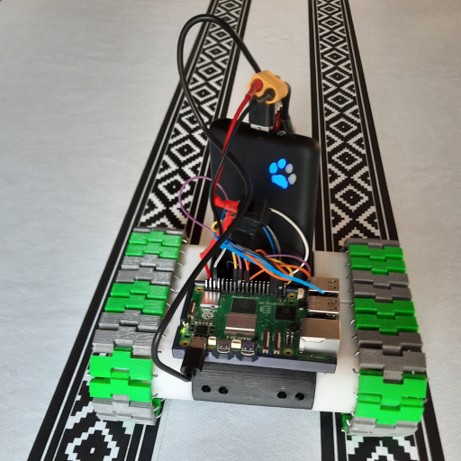
Dec 2024
Created a 3D printed keyboard-controlled RC-Tank. I printed parts using avilable online models. I used a Raspberry Pi 5 to control the RC-Tank using ZeroMQ to communicate between my laptop and the Raspberry Pi. A script running on the laptop records input keys and sends them to the Raspberry Pi, allowing for remote control.
Click here to watch the 3D printed Tank -
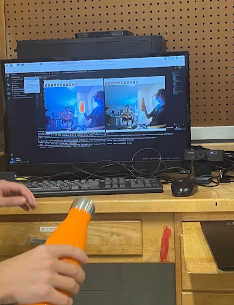
Nov 2024
Using a CLIPSeg model created by Timo Lüddecke and Alexander Ecker, which is available in HuggingFace, I created a simple python app that takes in camera streams and prompts, and shows the images with segmented mask overlays depending on where the object in the prompt is in the image. CLIPSeg is a Zero-Shot Prompt-Based Image Segmentation model.
-
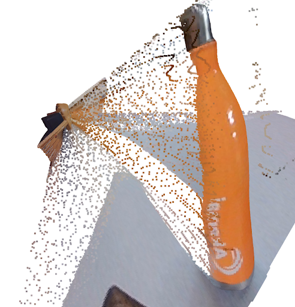
Sept 2024
Using Open3D and a depth estimation model available in HuggingFace (DepthAnythingV2), I created a python script that converts single or multiple RGB images into a 3D Reconstruction of the scenes. Multiple images allows for multiple angles, filling in the 3D scene better.
-
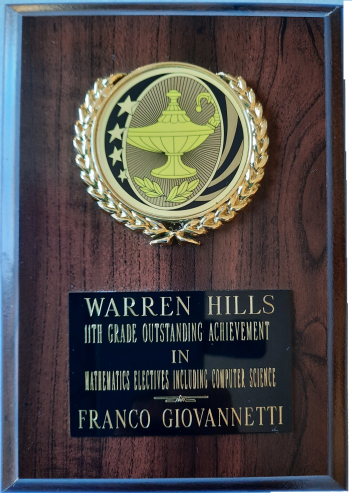
Jun 2024
In 11th grade, I was honored to receive the Outstanding Achievement Award in Mathematics Electives, including Computer Science, for the second consecutive year. Out of 300 students, being chosen again for this recognition was a testament to my continued dedication and excellence in these subjects. This award reflected my ongoing passion for mathematics and computer science, and I am excited to further deepen my knowledge and skills as I continue my academic journey.
-

Jun 2024
As a National Cyber Scholars winner and GIAC Foundational Cybersecurity Technologies (GFACT) practitioner, I have demonstrated exceptional proficiency in foundational cybersecurity concepts and practical skills. The GFACT certification validates my expertise in essential areas of computers, technology, and security fundamentals, equipping me with the knowledge and tools to address complex cybersecurity challenges. These achievements reflect my commitment to excellence in the ever-evolving field of cybersecurity and my readiness to contribute at the highest levels.
-
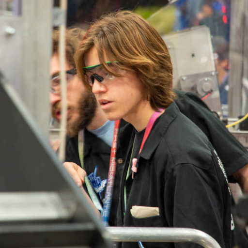
Apr 2024
In April, I had the honor of driving our robot at the Worlds Championship in Houston—a once-in-a-lifetime experience. While at Worlds, I collaborated with a Brazilian team to help them implement pneumatic coding by repurposing code from my first FRC season. Despite the language barrier—Portuguese versus Spanish—my fluency in Spanish enabled me to understand their needs and support their efforts. This moment highlighted the power of teamwork and the global nature of robotics.
-
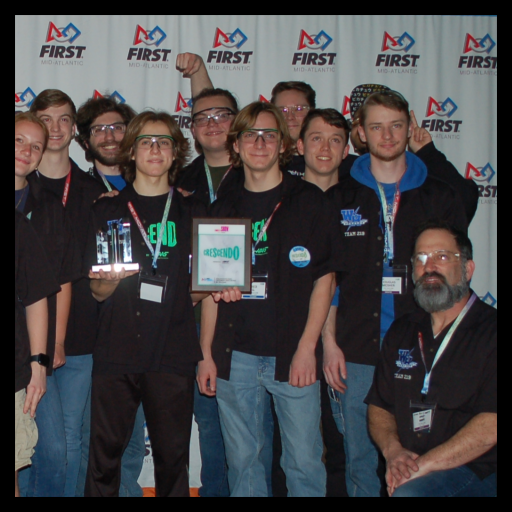
Mar 2024
As lead programmer, my primary goal for Team 219 was to maximize autonomous points, a challenge we met by earning the prestigious Autonomous Award. During Week 1, we reached the finals, and in Week 4, we ranked #1 in qualifications and made it to the finals once again. Some teachers have called this the most successful season in Team 219's history—a testament to our hard work and dedication.
Click here to watch Autonomous -
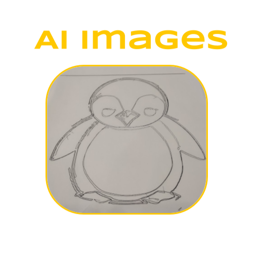
Jan 2024
With my brother, we designed and built an AI-Powered Plotter that utilizes an AI Art Generator through HTTP Requests to create intricate drawings from prompts. By converting image prompts into G-Code, the plotter interprets and translates the code into precise motor movements to draw the images.
AI-Powered Plotter -
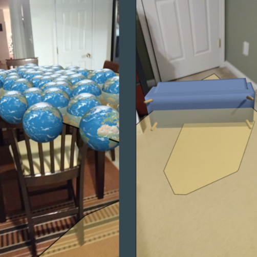
Dec 2023
I developed an augmented reality app in Unity to visualize furniture and other objects in real-world settings. Users are capable of moving around the furniture while it remains in place. The app works on Android and uses AR-Core.
Augmented Reality 3D Object Placer -
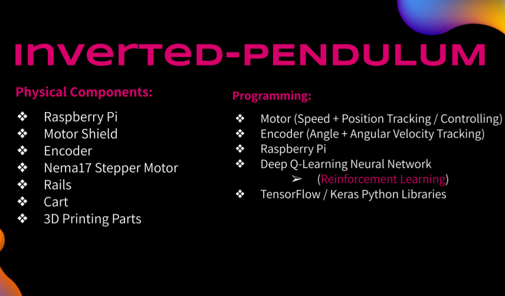
Nov 2023
With my brother, we created an Inverted Pendulum, a challenging project in dynamics and control systems. While my brother focused on the mechanical build, I trained a Deep Q-Network (DQN) model through Reinforcement Learning to stabilize the pendulum in an upright position. The model is capable of maintaining the pendulum in an upright position for split seconds, though requires further training. Once we fix the current motor issues with the pendulum, we will use simulation software to improve its training accuracy, as it currently has very limited training data.
Reinforcement-Learning Inverted Pendulum -
Oct 2023
With my brother, we created an Arduino-based self-balancing Segway, focusing on stability and Bluetooth phone control. I primarily focused on overcoming challenges with Bluetooth connectivity, and programming an app for remote control, along with programming the segway's functionality. The segway maintains an upright position using a PID Loop that runs locally on the Arduino. The app works by reading the phones tilt, which when tilted forward sets the new target angle for the PID loop to maintain. So that when it is tilted forward, the segway matches this forward tilt and moves forward.
Click here to watch the Segway -
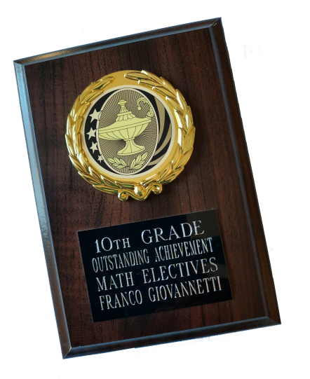
Jun 2023
In June 2023, I was honored with the Outstanding Achievement Award in Mathematics Electives, including Computer Science. This recognition highlighted my dedication and passion for these subjects, reflecting my commitment to academic excellence and problem-solving skills. It’s a testament to my continuous growth in both mathematical concepts and the field of computer science.
-
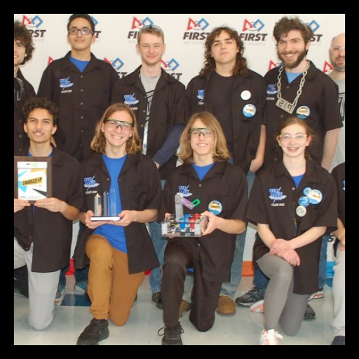
Mar 2023
In the 2023 Charged UP season, we achieved notable successes, including a strong performance at the Week 2 FMA District Mount Olive Event, where our autonomous programming helped us rank 13th. We were honored with the Gracious Professionalism Award for supporting Team 7045. At the Week 4 FMA District Warren Hills Event, we won the Innovation in Controller Award for our 3D-printed controller.
Click here to watch the Controller in action -
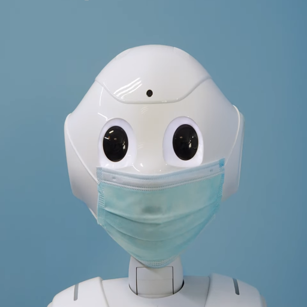
Mar 2022
Our first FRC (First Robotics Competition) event was unforgettable. Despite being a newly formed team navigating the challenges of COVID, I took on dual roles as lead programmer and driver during my freshman year. Against all odds, we earned the Excellence in Engineering Award, marking the 10th robotics award for Warren Hills and setting the foundation for future success.
-
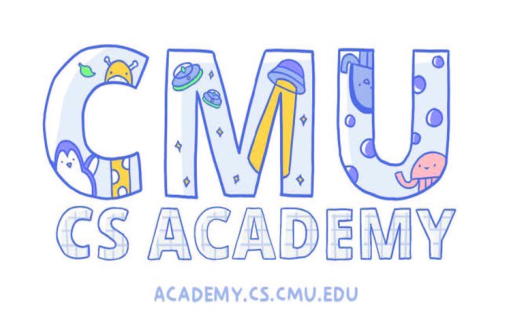
Dec 2021
During my freshman year, I explored programming through the Carnegie Mellon Computer Science Academy's CS1: Introduction to Programming with Python—a robust introduction to coding through graphics and animations.
Click here to view my Python Projects -
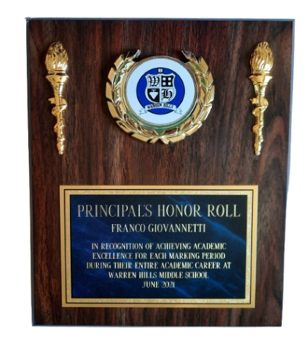
Jun 2021
In June 2021, I earned the Principal's Honor Roll Award for achieving academic excellence throughout middle school, all while finishing 8th grade remotely due to COVID. This experience strengthened my discipline and work ethic, proving that I can excel in any environment—whether in the classroom or from home.
-

Jun 2014
June 2014 marked the start of my coding journey as I began developing apps with MIT App Inventor. It was like unlocking a new superpower—building technology with technology—sparking my passion for programming and shaping my future in AI and robotics.
-
Jul 2007
I was born as v2.0
!<-- —a major upgrade, according to my parents, who claim they fixed some bugs but introduced a few new ones. They always joke that my constant need for acknowledgment made me their little TCP protocol in action. -->